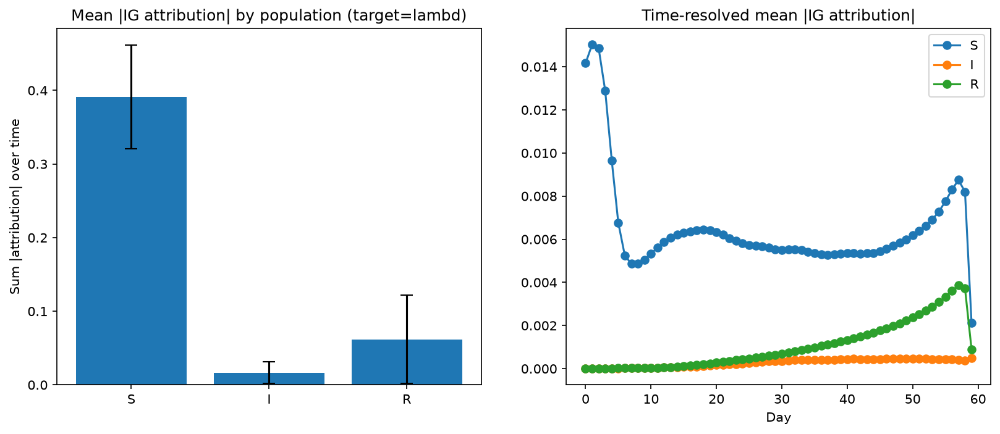
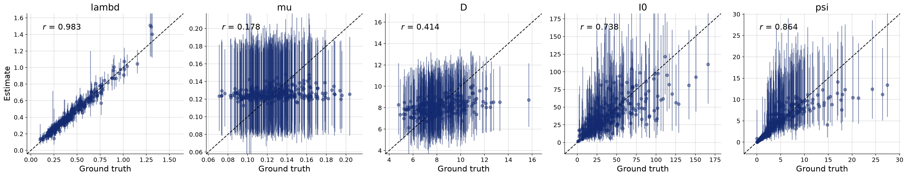
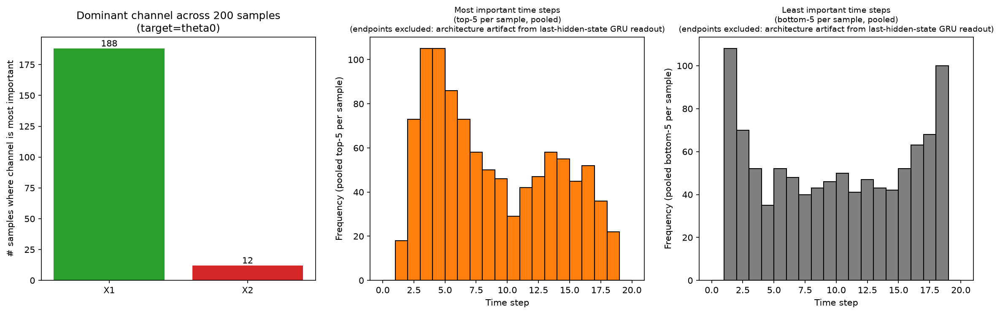
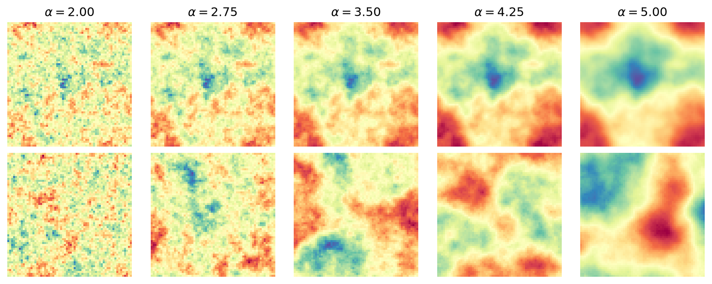
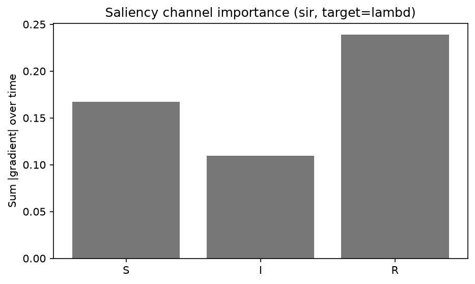
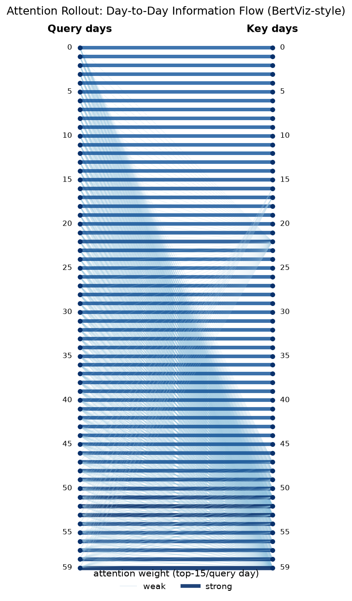
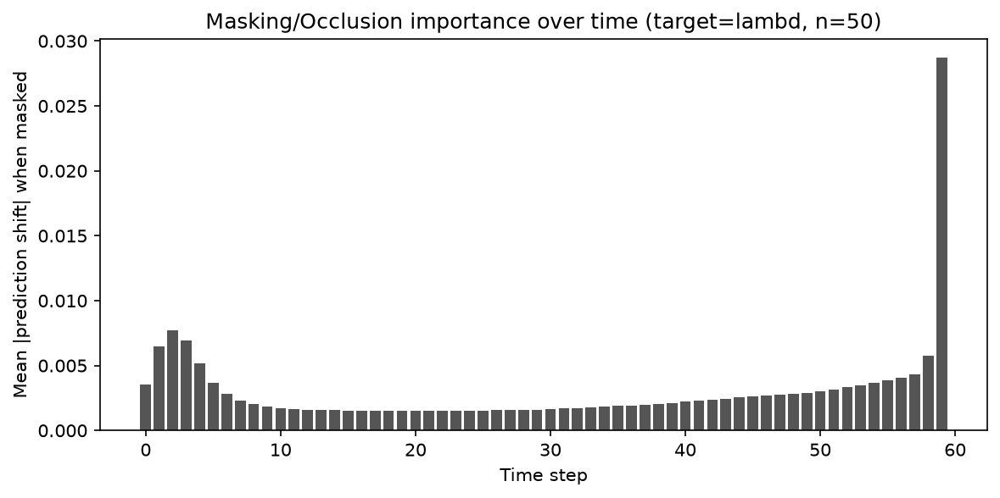
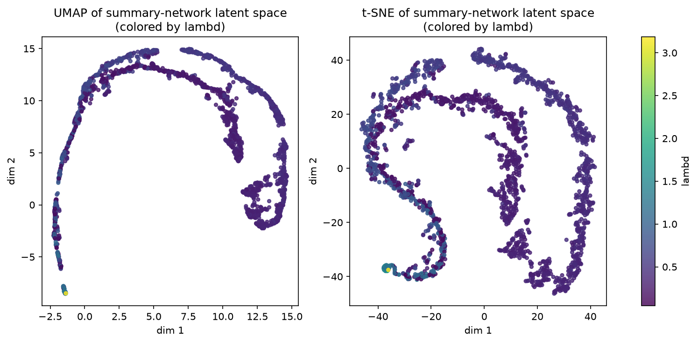
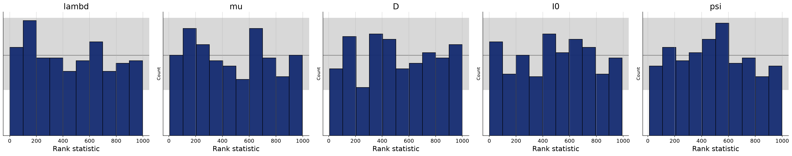

Three simulators (SIR epidemic model, a Lotka-Volterra-style example, and a Gaussian Random Field) trained with BayesFlow, explained with four XAI methods (Integrated Gradients, Saliency Maps, Attention Rollout, Masking/Occlusion) — wired through a single registry so a new simulator or XAI method is a decorator away, config-driven end to end.
SIR · Lotka-Volterra · GRF → XAI Methods

No XAI-method result figure checked in for GRF yet — try SIR or Lotka-Volterra.
simulator: sir · xai_method: integrated_gradients
# clone, then from the project root: $ python -m venv .venv && source .venv/bin/activate $ pip install -e . $ python scripts/run_workflow.py --config configs/workflow_example.yaml
Create and activate a virtual environment
$ python -m venv .venv $ source .venv/bin/activate
Install the package (editable) and its dependencies
$ pip install -e . # or: pip install -r requirements.txt
Set your GPU / backend (copy the example env file)
$ cp .env.example .env # .env sets KERAS_BACKEND=torch and CUDA_VISIBLE_DEVICES=<your GPU index> # note: src/xai/utils/config.py sets a default at import time -- # check that default matches an idle GPU on a shared machine before running.
# the general, config-driven entry point -- any registered # simulator x summary network x XAI method: $ python scripts/run_workflow.py --config configs/workflow_example.yaml # original per-pipeline scripts still work exactly as before: $ python scripts/run_diagnostics.py $ python scripts/run_xai.py --target lambd --stats $ python scripts/run_lv_xai.py --target theta0 --stats $ python scripts/run_grf_xai.py --target alpha
# registering your own simulator (see xai/registry.py for the full docstring) from xai.registry import register_simulator, SimulatorSpec @register_simulator("my_sim", targets=["theta"]) def build_my_sim_spec() -> SimulatorSpec: from my_lab.my_dataset import build_my_tensor_dataset return SimulatorSpec( name="my_sim", param_names=["theta"], input_kind="timeseries", # or "image" build_tensor_dataset=build_my_tensor_dataset, channel_names=["x"], in_channels=1, ) # then: simulator: my_sim in your own workflow .yaml
# configs/workflow_example.yaml simulator: sir # sir | lotka_volterra | grf summary_network: gru # gru | conv | transformer inference_network: coupling_flow target: lambd # must be a registered target for the simulator xai_method: integrated_gradients # integrated_gradients | saliency_map | attention_rollout | masking
Stationary Susceptible-Infected-Recovered epidemic model from the BayesFlow tutorial: a prior over infection/recovery dynamics, forward-simulated case counts observed through negative-binomial noise.

Despite the name, a theta-parametrized sinusoidal signal with additive Gaussian noise (kept verbatim from the source example) -- a 2-channel timeseries testbed for the same XAI surrogate pipeline as SIR.

BayesFlow's spatial-data example: a 64×64 field generated from a power-law spectrum. Two scenarios -- (log_std, alpha) as inference target, and the field itself generated via a conditional diffusion model.

Walks a straight-line path from a zero baseline to the real input, accumulating the output's gradient at every step, to attribute the prediction to each input value.
The simplest XAI method: the raw gradient of the output with respect to the input, no baseline or path integral -- cheap, but noisier than Integrated Gradients.

Multiplies a transformer's per-layer attention weights (mixed with a residual/identity term per layer) to trace how information from each time step flows to the output through every layer.

No gradients at all: cover part of the input (a time step, or an image patch) with a zero baseline and measure how much the prediction moves. Works even against models Captum can't differentiate through.

Every GRU surrogate here reads out only the final hidden state, so the
last time step reaches the output through a single update while earlier
steps are diluted through many compounded ones -- endpoints dominate
|IG attribution| almost by construction. Channel/time importance stats
exclude both endpoints from the reported "important time steps" for
this reason (see methods/integrated_gradients.py).
The transformer's rolled-out attention concentrates on the outbreak's rising/peak region, the same window Integrated Gradients ranks highest for the Infected (I) channel -- two independent methods converging on the same explanation is a useful sanity check for either one alone.
Occlusion needs one forward pass per masked time step/patch instead of one backward pass total, so it scales with input size -- worth it specifically because it needs no autograd support from the model, unlike the other three methods here.


Everything selectable from a config lives in one registry
(src/xai/registry.py) populated by
src/xai/registrations.py. Registering something new is a
decorator, in your own module:
# my_lab/my_xai_method.py from xai.registry import register_xai_method @register_xai_method("my_method") def my_method(spec, body, head, X_val, y_val, target_idx, target_name, fig_prefix, **kwargs): # spec: SimulatorSpec (input_kind, channel_names / field_shape, ...) # body/head: trained surrogate -- head(body(x)) -> target predictions # return whatever you plot; xai.utils.plotting.show_and_save() # saves figures the same way every other method does. ...
Import your module once (e.g. at the top of your own copy of
scripts/run_workflow.py, or add it to
registrations.py) so the decorator runs before the config
lookup -- then reference it by name from any workflow .yaml.
src/xai/ registry.py # SIMULATORS / SUMMARY_NETWORKS / INFERENCE_NETWORKS / XAI_METHODS registrations.py # built-in registrations (import this to populate the registry) simulation/ sir/ # sir_model.py, adapter.py + README.md lotka_volterra/ # lotka_volterra_model.py + README.md grf/ # grf_model.py, grf_generative_model.py + README.md dataset.py # shared tensor-dataset builders training/ # BayesFlow BasicWorkflow build/train diagnostics/ # loss / recovery / SBC calibration plots methods/ integrated_gradients.py, saliency_map.py, attention_rollout.py, masking.py generic_surrogate.py # registry-driven surrogate net + trainer utils/ # CONFIG, DEVICE, show_and_save() scripts/ run_workflow.py # config-driven entry point run_xai.py, run_lv_xai.py, run_grf_xai.py, ... configs/ workflow_example.yaml outputs/ # figures/, models/, logs/ (gitignored)